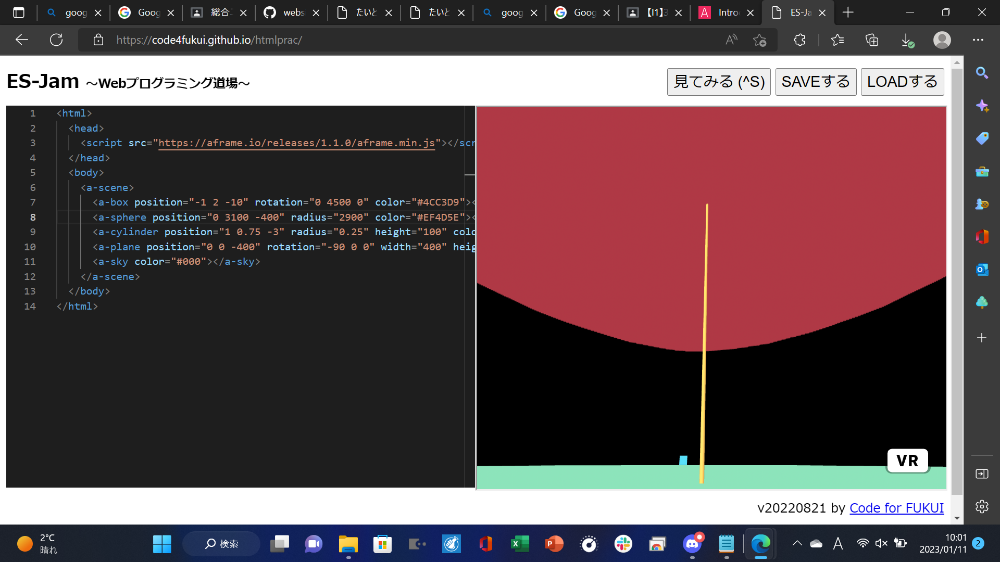
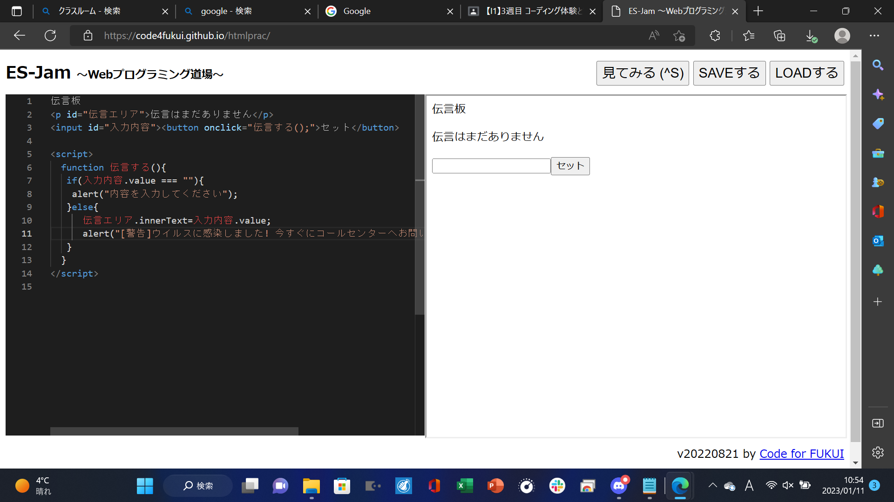

第3週目
3-1 JavaScript体験：VR空間を作る

伝言板
1.内容
プログラミング道場というサイトを使用して、プログラムを別サイトから引用してvr空間を再現した。またそのプログラムを実際にvr空間上に映し出しvr空間を体験した。
2.感想
簡単なプログラムだと思ったが、圧縮されているプログラムもあって、単純でないんだと実感した、しかし数値に当てられてる円や四角などの記号を表す記号は思ったより簡単である程度は理化することが。
また、情報の授業で習った16進数はプログラムのどこに使われるのかと疑問に思っていたが色を表す数字ということを知り納得した。
3-2 JavaScript体験：伝言プログラムを作る

伝言板
1.内容
配布された教科書通りにプログラムを書き写し、伝言板ソフトを作成しプログラムを実行させる。
2.感想
プログラムを書き写すうちに()や(print>)など簡単な言語の意味は理解することができたが、何故これが必要なのだろうと思う言語もたくさんあり、やはりプログラミング言語の世界は奥が深いなあと思った。
また、プログラムがうまく動作しなかったときに何が足りないのかという探す作業が一番大変だった。また、言語のどこかが間違っているとき自分で探すよりも他人に見つけてもらうほうがはるかに見つ
かりやすいということも知った。
3-3 JavaScriptプログラムの３次元空間の体験
1.内容
プログラミング言語で作ったVR空間をVRゴーグルを使用して実際に体験する。
2.感想
この実習でVRゴーグルを使用するのは二回目だが、やはり非現実的な空間にはわくわくした。またVR空間でのボールを飛ばすのはよかったが、ボールが一定の数が越えたら消えたり。
ワールドの外へ出てしまったりとバグが多かったような印象。またボールを使って対戦形式にするなど面白くする要素もまだまだあるなと感じた。